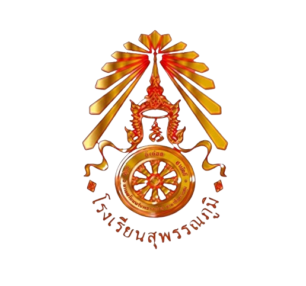

ระบบตรวจสอบผลการเรียนออนไลน์
โรงเรียนสุพรรณภูมิ ชั้นประถมศึกษาปีที่ 1/6 ภาคเรียนที่ 1 ปีการศึกษา 2569
กรอกเลขประจำตัวนักเรียน
ค้นหา
ไม่พบข้อมูลเลขประจำตัวนักเรียนนี้ กรุณาตรวจสอบอีกครั้ง

โรงเรียนสุพรรณภูมิ
แบบรายงานผลการพัฒนาคุณภาพผู้เรียนรายบุคคล
ชั้นประถมศึกษาปีที่ 1/6 ภาคเรียนที่ 1 ปีการศึกษา 2569
ชื่อ
-
เลขประจำตัว
-
ชั้น
ป.1/6
รหัสวิชา
รายวิชา
คะแนนภาคเรียนที่ 1
(ร้อยละ)
ลงชื่อ .............................................. ครูประจำชั้น
(นางสาวกนกพร ธงชัย)
พิมพ์ / บันทึกเป็น PDF